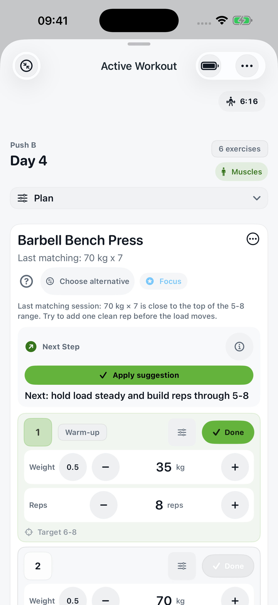
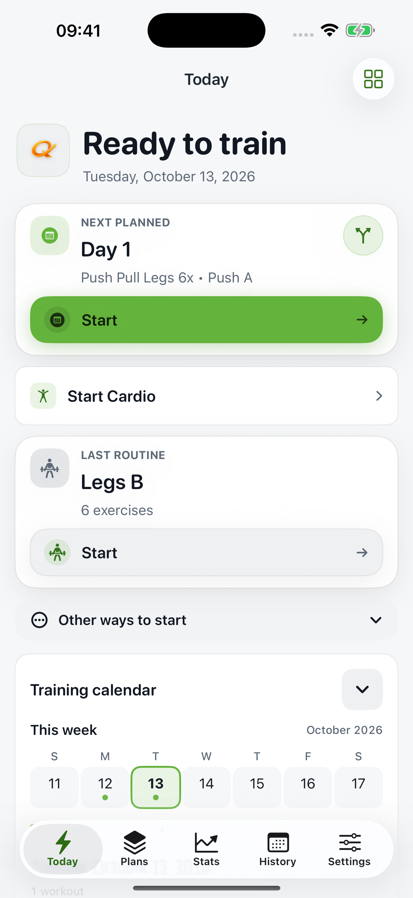
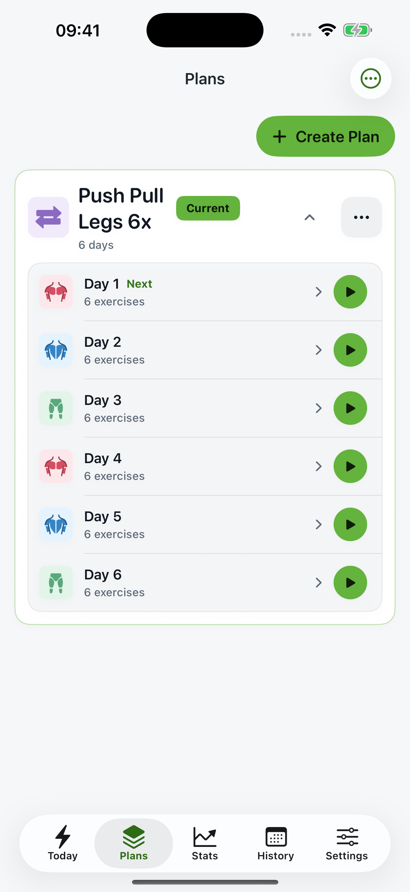

Start with your plan.
Choose a starter plan or build your own routine. Your next workout is ready when you are.
For your next strong session
Log weights and reps, see your previous performance and take a clear target into your next set. Your workout tracker for iPhone and Apple Watch.
No account · No ads · English & German

Built for the gym
Choose a starter plan or build your own routine. Your next workout is ready when you are.
Keep weight, reps and previous performance together. The rest timer keeps your session moving.
Review completed sessions, compare your performance and spot new personal bests.


QuickLift on iPhone · Screens show sample training data
Log strength sets on Apple Watch and record cardio using the Health data you choose to authorize.
Import supported Strong CSV exports. Review the preview before adding your training history.
Local storage, exports and complete backups. Enable Apple Health and iCloud backup when you choose.
For your progress
QuickLift is available on the App Store now. The Premium offer below is planned for a later update and is not active yet.
€0
The essentials for every workout.
€4.99 / month
or €29.99 / year
More planning. Deeper insight.
Planned: 7 days free on the annual subscription for eligible customers, then €29.99 per year. No trial on the monthly plan. Renews automatically until cancelled. Prices shown are planned German prices; the offer in the app is authoritative.
No. Workouts are stored locally. You choose whether to use Apple Health or iCloud backup.
Not yet. The App Store download is available now; the subscription and annual trial described here are planned for a later update. Nothing is purchased through this website.
People already using QuickLift before subscriptions launch receive permanent Premium access. The new subscription offer is intended for new users after launch.
After the planned Premium launch, your saved workouts and plans remain intact. Premium features end with your paid period; basic logging and history remain available.
Yes. QuickLift supports English and German, kg or lb, and kilometers or miles.
Create a complete JSON backup in Settings. You can also enable optional iCloud backup and restore. This is not continuous multi-device synchronization.
Your first set starts with a clear plan.
Download on the App Store